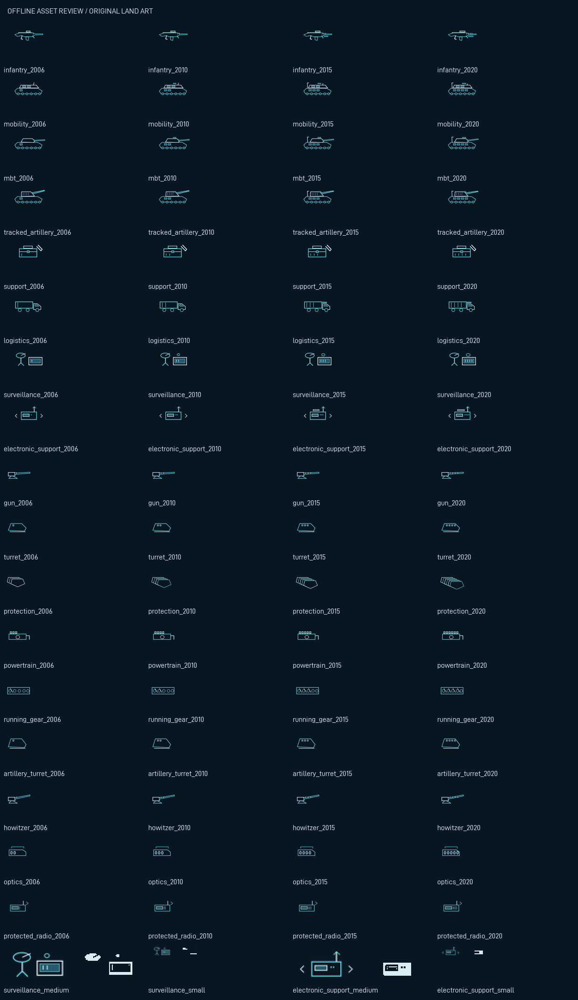
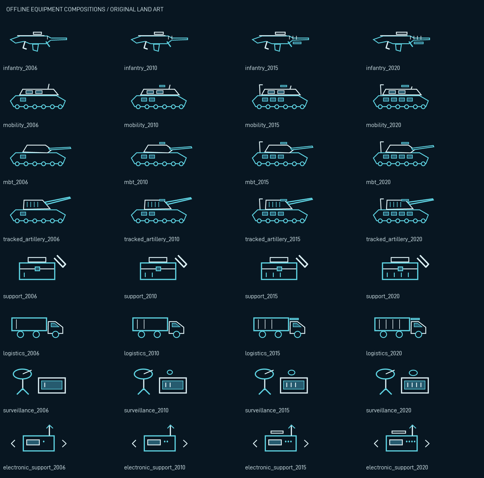

Offline original-art review
Technical artwork only. This is not a native research-screen screenshot or engine acceptance.


- gfx/AC_land/research/infantry_2006.dds — 112×40, 1frame(s)
- gfx/AC_land/equipment/infantry_2006.dds — 192×96, 1frame(s)
- gfx/AC_land/research/infantry_2010.dds — 112×40, 1frame(s)
- gfx/AC_land/equipment/infantry_2010.dds — 192×96, 1frame(s)
- gfx/AC_land/research/infantry_2015.dds — 112×40, 1frame(s)
- gfx/AC_land/equipment/infantry_2015.dds — 192×96, 1frame(s)
- gfx/AC_land/research/infantry_2020.dds — 112×40, 1frame(s)
- gfx/AC_land/equipment/infantry_2020.dds — 192×96, 1frame(s)
- gfx/AC_land/research/mobility_2006.dds — 112×40, 1frame(s)
- gfx/AC_land/equipment/mobility_2006.dds — 192×96, 1frame(s)
- gfx/AC_land/research/mobility_2010.dds — 112×40, 1frame(s)
- gfx/AC_land/equipment/mobility_2010.dds — 192×96, 1frame(s)
- gfx/AC_land/research/mobility_2015.dds — 112×40, 1frame(s)
- gfx/AC_land/equipment/mobility_2015.dds — 192×96, 1frame(s)
- gfx/AC_land/research/mobility_2020.dds — 112×40, 1frame(s)
- gfx/AC_land/equipment/mobility_2020.dds — 192×96, 1frame(s)
- gfx/AC_land/research/mbt_2006.dds — 112×40, 1frame(s)
- gfx/AC_land/equipment/mbt_2006.dds — 192×96, 1frame(s)
- gfx/AC_land/research/mbt_2010.dds — 112×40, 1frame(s)
- gfx/AC_land/equipment/mbt_2010.dds — 192×96, 1frame(s)
- gfx/AC_land/research/mbt_2015.dds — 112×40, 1frame(s)
- gfx/AC_land/equipment/mbt_2015.dds — 192×96, 1frame(s)
- gfx/AC_land/research/mbt_2020.dds — 112×40, 1frame(s)
- gfx/AC_land/equipment/mbt_2020.dds — 192×96, 1frame(s)
- gfx/AC_land/research/tracked_artillery_2006.dds — 112×40, 1frame(s)
- gfx/AC_land/equipment/tracked_artillery_2006.dds — 192×96, 1frame(s)
- gfx/AC_land/research/tracked_artillery_2010.dds — 112×40, 1frame(s)
- gfx/AC_land/equipment/tracked_artillery_2010.dds — 192×96, 1frame(s)
- gfx/AC_land/research/tracked_artillery_2015.dds — 112×40, 1frame(s)
- gfx/AC_land/equipment/tracked_artillery_2015.dds — 192×96, 1frame(s)
- gfx/AC_land/research/tracked_artillery_2020.dds — 112×40, 1frame(s)
- gfx/AC_land/equipment/tracked_artillery_2020.dds — 192×96, 1frame(s)
- gfx/AC_land/research/support_2006.dds — 112×40, 1frame(s)
- gfx/AC_land/equipment/support_2006.dds — 192×96, 1frame(s)
- gfx/AC_land/research/support_2010.dds — 112×40, 1frame(s)
- gfx/AC_land/equipment/support_2010.dds — 192×96, 1frame(s)
- gfx/AC_land/research/support_2015.dds — 112×40, 1frame(s)
- gfx/AC_land/equipment/support_2015.dds — 192×96, 1frame(s)
- gfx/AC_land/research/support_2020.dds — 112×40, 1frame(s)
- gfx/AC_land/equipment/support_2020.dds — 192×96, 1frame(s)
- gfx/AC_land/research/logistics_2006.dds — 112×40, 1frame(s)
- gfx/AC_land/equipment/logistics_2006.dds — 192×96, 1frame(s)
- gfx/AC_land/research/logistics_2010.dds — 112×40, 1frame(s)
- gfx/AC_land/equipment/logistics_2010.dds — 192×96, 1frame(s)
- gfx/AC_land/research/logistics_2015.dds — 112×40, 1frame(s)
- gfx/AC_land/equipment/logistics_2015.dds — 192×96, 1frame(s)
- gfx/AC_land/research/logistics_2020.dds — 112×40, 1frame(s)
- gfx/AC_land/equipment/logistics_2020.dds — 192×96, 1frame(s)
- gfx/AC_land/research/surveillance_2006.dds — 112×40, 1frame(s)
- gfx/AC_land/equipment/surveillance_2006.dds — 192×96, 1frame(s)
- gfx/AC_land/research/surveillance_2010.dds — 112×40, 1frame(s)
- gfx/AC_land/equipment/surveillance_2010.dds — 192×96, 1frame(s)
- gfx/AC_land/research/surveillance_2015.dds — 112×40, 1frame(s)
- gfx/AC_land/equipment/surveillance_2015.dds — 192×96, 1frame(s)
- gfx/AC_land/research/surveillance_2020.dds — 112×40, 1frame(s)
- gfx/AC_land/equipment/surveillance_2020.dds — 192×96, 1frame(s)
- gfx/AC_land/research/electronic_support_2006.dds — 112×40, 1frame(s)
- gfx/AC_land/equipment/electronic_support_2006.dds — 192×96, 1frame(s)
- gfx/AC_land/research/electronic_support_2010.dds — 112×40, 1frame(s)
- gfx/AC_land/equipment/electronic_support_2010.dds — 192×96, 1frame(s)
- gfx/AC_land/research/electronic_support_2015.dds — 112×40, 1frame(s)
- gfx/AC_land/equipment/electronic_support_2015.dds — 192×96, 1frame(s)
- gfx/AC_land/research/electronic_support_2020.dds — 112×40, 1frame(s)
- gfx/AC_land/equipment/electronic_support_2020.dds — 192×96, 1frame(s)
- gfx/AC_land/modules/gun_2006.dds — 64×64, 1frame(s)
- gfx/AC_land/modules/gun_2010.dds — 64×64, 1frame(s)
- gfx/AC_land/modules/gun_2015.dds — 64×64, 1frame(s)
- gfx/AC_land/modules/gun_2020.dds — 64×64, 1frame(s)
- gfx/AC_land/modules/turret_2006.dds — 64×64, 1frame(s)
- gfx/AC_land/modules/turret_2010.dds — 64×64, 1frame(s)
- gfx/AC_land/modules/turret_2015.dds — 64×64, 1frame(s)
- gfx/AC_land/modules/turret_2020.dds — 64×64, 1frame(s)
- gfx/AC_land/modules/protection_2006.dds — 64×64, 1frame(s)
- gfx/AC_land/modules/protection_2010.dds — 64×64, 1frame(s)
- gfx/AC_land/modules/protection_2015.dds — 64×64, 1frame(s)
- gfx/AC_land/modules/protection_2020.dds — 64×64, 1frame(s)
- gfx/AC_land/modules/powertrain_2006.dds — 64×64, 1frame(s)
- gfx/AC_land/modules/powertrain_2010.dds — 64×64, 1frame(s)
- gfx/AC_land/modules/powertrain_2015.dds — 64×64, 1frame(s)
- gfx/AC_land/modules/powertrain_2020.dds — 64×64, 1frame(s)
- gfx/AC_land/modules/running_gear_2006.dds — 64×64, 1frame(s)
- gfx/AC_land/modules/running_gear_2010.dds — 64×64, 1frame(s)
- gfx/AC_land/modules/running_gear_2015.dds — 64×64, 1frame(s)
- gfx/AC_land/modules/running_gear_2020.dds — 64×64, 1frame(s)
- gfx/AC_land/modules/artillery_turret_2006.dds — 64×64, 1frame(s)
- gfx/AC_land/modules/artillery_turret_2010.dds — 64×64, 1frame(s)
- gfx/AC_land/modules/artillery_turret_2015.dds — 64×64, 1frame(s)
- gfx/AC_land/modules/artillery_turret_2020.dds — 64×64, 1frame(s)
- gfx/AC_land/modules/howitzer_2006.dds — 64×64, 1frame(s)
- gfx/AC_land/modules/howitzer_2010.dds — 64×64, 1frame(s)
- gfx/AC_land/modules/howitzer_2015.dds — 64×64, 1frame(s)
- gfx/AC_land/modules/howitzer_2020.dds — 64×64, 1frame(s)
- gfx/AC_land/modules/optics_2006.dds — 64×64, 1frame(s)
- gfx/AC_land/modules/optics_2010.dds — 64×64, 1frame(s)
- gfx/AC_land/modules/optics_2015.dds — 64×64, 1frame(s)
- gfx/AC_land/modules/optics_2020.dds — 64×64, 1frame(s)
- gfx/AC_land/modules/protected_radio_2006.dds — 64×64, 1frame(s)
- gfx/AC_land/modules/protected_radio_2010.dds — 64×64, 1frame(s)
- gfx/AC_land/modules/protected_radio_2015.dds — 64×64, 1frame(s)
- gfx/AC_land/modules/protected_radio_2020.dds — 64×64, 1frame(s)
- gfx/AC_land/counters/surveillance_medium.dds — 152×42, 2frame(s)
- gfx/AC_land/counters/surveillance_small.dds — 60×12, 2frame(s)
- gfx/AC_land/counters/electronic_support_medium.dds — 152×42, 2frame(s)
- gfx/AC_land/counters/electronic_support_small.dds — 60×12, 2frame(s)
- gfx/AC_land/ui/land_tab.dds — 356×30, 4frame(s)
- gfx/AC_land/ui/sheet.dds — 96×96, 1frame(s)